Perfil de usuário
Introdução
Perfil de usuário é uma ferramenta utilizada para identificar características de usuários do produto ou sistema, algumas características incluem faixa etária, atividade principal, nível de instrução etc. Os dados para embasar um perfil de usuário são coletados através de entrevistas e/ou questionários e são a base necessária para a criação de personas. [1]
Objetivos
A montagem do perfil de usuário é importante para entender bem as características dos usuários primários do sistema, reconhecer seus requisitos e também serve como base para a criação de personas, personagens fictícios para representar os diferentes grupos alvo do sistema. Além disso, perfil de usuário irá guiar o grupo para realizar a seleção de usuários a serem entrevistados, para que se encaixem no perfil analisado e como mostrado no ciclo de vida de mayhew serve como base para a criação das metas de usabilidade.
Metodologia
O uso do questionário para coleta de informações para a criação do perfil de usuário foi escolhida com base em:
- Permite a coleta de informações de muitos usuários;
- A análise dos dados é rápida e a ferramenta usada já apresenta gráficos;
- Sem custo.
Entretanto alguns problemas podem vir a ocorrer usando esta técnica:
- Dependendo do método de distribuição, o público pode não ser representativo;
- Com uma amostra pequena, os dados não são muito significativos;
- Perguntas podem induzir os respondentes a respostas específicas.
Para a coleta de informações dos perfis de usuário foi usado um questionário feito no Google Forms com 12 questões, na primeira seção do questionário é apresentado ao respondente o termo de consentimento, para avançar é necessário selecionar a opção "Concordar", em seguida, é apresentado a questão "Já usou o sistema ISSNetDF?", caso a resposta seja não, o usuário irá seguir para a seção de envio de formulário, caso seja sim, as 12 questões serão feitas. As questões apresentadas aos usuários são:
- Qual é a sua idade?
- Qual é o seu gênero?
- Qual é a sua renda mensal bruta?
- Qual é o seu nível de escolaridade?
- Qual é a sua profissão?
- Qual é o tamanho da empresa em que você trabalha?
- Com que frequência você utiliza o ISSNetDF?
- Quais são as funcionalidades que você mais utiliza no ISSNetDF?
- Em que áreas do ISSNetDF você acredita que precisam de melhorias? (aberta)
- Avalie de (1 a 5) a facilidade de uso do ISSNetDF
- Avalie de (1 a 5) o seu nível de satisfação com o ISSNetDF
- Você tem alguma sugestão para melhorar o ISSNetDF?
O questionário teve 19 respostas, sendo que 12 são de respondentes que usaram o sistema ISSNetDF, a distribuição do formulário foi feita em grupos da FGA, UnB, conhecidos e alguns comerciantes locais, usando Whatsapp e Telegram.
Resultados
Questão 1
Figura 1: Questão "Qual é a sua idade?"
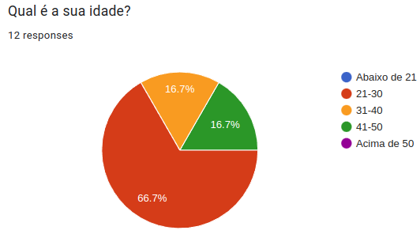
Fonte: Autor
Questão 2
Figura 2: Questão "Qual é o seu gênero?"
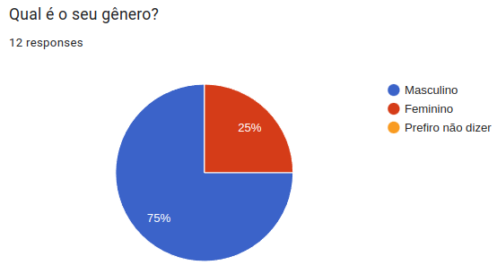
Fonte: Autor
Questão 3
Figura 3: Questão "Qual é a sua renda mensal bruta?"
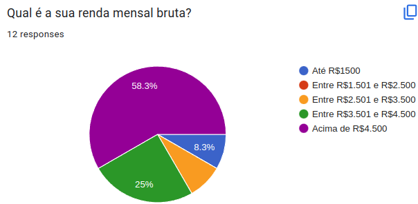
Fonte: Autor
A figura 3 mostra que a 58,3% dos participantes tinham renda mensal bruta de acima de R$4,500, 25% entre R$3,501 e R$4,500, 8,3% até R$1,500 e 8,4% entre R$2,501 e R$3,500.
Questão 4
Figura 4: Questão "Qual é o seu nível de escolaridade?"
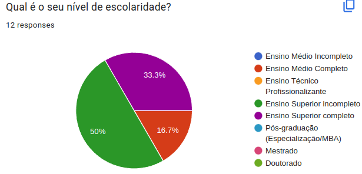
Fonte: Autor
Questão 5
Figura 5: Questão "Qual é a sua profissão?"
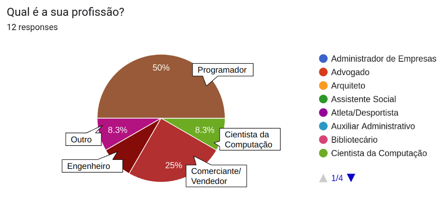
Fonte: Autor
Questão 6
Figura 6: Questão "Qual é o tamanho da empresa em que você trabalha?"
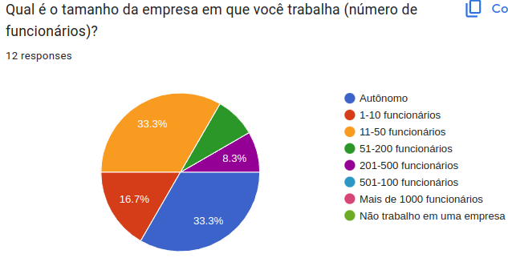
Fonte: Autor
Questão 7
Figura 7: Questão "Com que frequência você utiliza o ISSNet?"
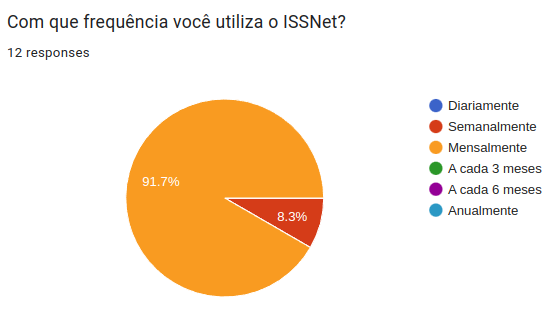
Fonte: Autor
Questão 8
Figura 8: Questão "Quais são as funcionalidades que você mais utiliza no ISSNet?"
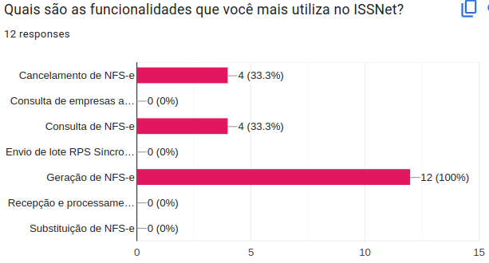
Fonte: Autor
Questão 9
Figura 9: Questão "Em que áreas do ISSNet você acredita que precisam de melhorias?"
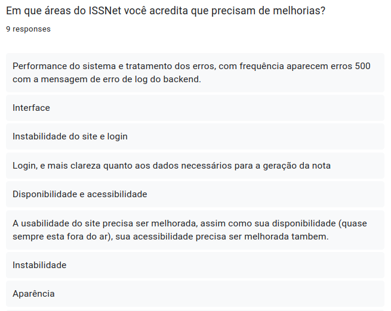
Fonte: Autor
- Interface de usuário;
- Performance do sistema;
- Acessibilidade.
Questão 10
Figura 10: Questão "Avalie de (1 a 5) a facilidade de uso do ISSNet"
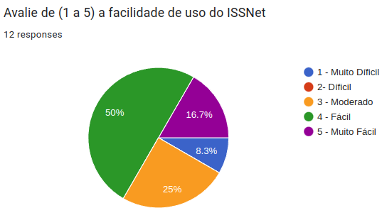
Fonte: Autor
Questão 11
Figura 11: Questão "Avalie de (1 a 5) o seu nível de satisfação com o ISSNet"
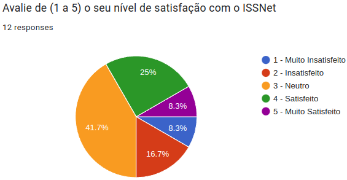
Fonte: Autor
Questão 12
Figura 12: Questão "Você tem alguma sugestão para melhorar o ISSNet?"
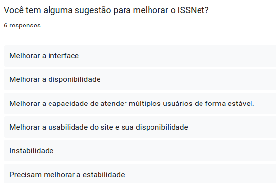
Fonte: Autor
Análise
Os respondentes programadores eram em sua maioria autônomos e comerciantes trabalhavam em empresas com mais de 11 funcionários, a grande maioria usa mensalmente para realizar duas funções principais: geração de NFS-e e consulta de NFS-e. Acham o sistema fácil de usar, mas não estão satisfeitos, reclamam principalmente da instabilidade do site e sua incapacidade de atender muitos usuários ao mesmo tempo, além da interface sem acessibilidade e com aparência datada.
| Características | Perfil |
|---|---|
| Idade | 21-30 |
| Sexo | Predominante masculino, 25% mulheres |
| Renda Mensal | Predominante acima de R$4.500 |
| Profissão | Programador/Comerciante |
| Escolaridade | Superior Completo/ Superior Incompleto |
| Tamanho da Empresa | Autônomo/11-50 funcionários |
| Frequência de uso | Mensalmente |
| Tarefas principais | Geração de NFS-e, Consulta de NFS-e |
| Facilidade de uso (1 muito difícil, 5 muito fácil) | 4 - Fácil |
| Satisfação de uso (1 muito insatisfeito, 5 muito satisfeito) | 3 - Neutro |
Referências
[1]: SIMONE DINIZ JUNQUEIRO BARBOSA, BRUNO SANTANA DA SILVA, Interação Humano-Computador, 1a. Edição, Editora Campus, 2010. Publicado em: 03/05/2021.
Histórico de revisão
| Versão | Data | Descrição | Autor(es) | Revisores |
|---|---|---|---|---|
0.0 |
06/05/2023 | Criação do arquivo | Arthur Trindade | Miguel Moreira |
0.1 |
07/05/2023 | Adiciona introdução | Júlio César | Miguel Moreira |
0.2 |
08/05/2023 | Adiciona outras seções | Júlio César, Marcus Vinicius | Miguel Moreira |
0.3 |
08/05/2023 | Pequenas correções | Júlio César, Marcus Vinicius | Miguel Moreira |
0.4 |
13/05/2023 | Correções | Júlio César | Miguel Moreira, Marcus Vinicius, Arthur Trindade |
0.5 |
03/07/2023 | Correção da Verificação PC2 | Júlio César | Miguel Moreira, Marcus Vinicius, Arthur Trindade |